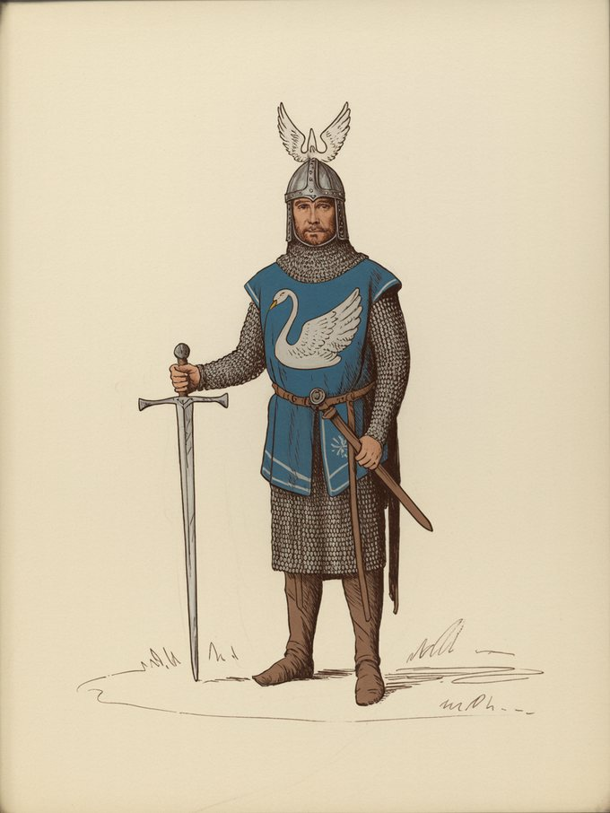

Dol Amroth
· TA
The Swan-princes' sea-castle; named for the last king of Lórien.
Open the full record in the living archive →Part of the Arda Archive — a corpus-first index of Tolkien's legendarium; every fact cited, every silence declared.
TA

The Swan-princes' sea-castle; named for the last king of Lórien.a
The provenance register records no hand for this plate, and the archive does not assert one.b
“departure of the last ship from the haven of the Silvan Elves near Dol Amroth in the year”c
“great fief of Belfalas, dwelt Prince Imrahil in his castle of Dol Amroth”d
The name stands in 351 cited lines, in 43 of the corpus's 192 texts — most often in Unfinished Tales of Numenor and Middle Earth (46), The Lord of the Rings (35), The Peoples of Middle Earth (32).e
94 cited lines stand in 5 volumes of the drafts and 95 in 8 of the published books — the published text carries it more often than the drafts did.f
a The text — LotR V.1; UT [C]
b The ruling — no provenance record stands for swan.svg in arda_assets.json. The archive does not assert a hand it has not recorded. [C]
c The text — Unfinished Tales of Numenor and Middle Earth · l.6676 [C]
d The text — The Lord of the Rings · l.33517 [C]
e Counted — site/arda_apparatus.json [C]
f Counted — site/arda_apparatus.json [C]

Minas Tirith (3), Pelargir (3), Fornost (1), Grey Havens (1).g
Gondor (23), Rohan (9), Mordor (2), Umbar (2).h

Amroth (326), Imrahil (47), Adrahil (25), Galador (16) — a shared line is a fact about the line, not a claim that the two met.i
counted from corpus lines that name BOTH records. A shared line is a fact about the line, not a claim that the two met; `eg` names a line a reader can open. [C]
Dol Amroth is Sindarin.j
a marginal hand recording a change to this record — searched over 59 verified notes in site/arda_hands.json, and nothing was found.k
g Counted — site/arda_apparatus.json [C]
h Counted — site/arda_apparatus.json [C]
i Counted — site/arda_apparatus.json [C]
j The lexicon — https://eldamo.org/content/words/word-3285266493.html [EXT]
k The search — site/arda_apparatus.json [C]

The Swan-princes' sea-castle; named for the last king of Lórien.
Open the full record in the living archive →